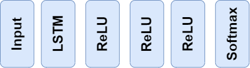
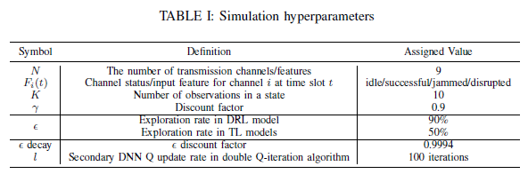
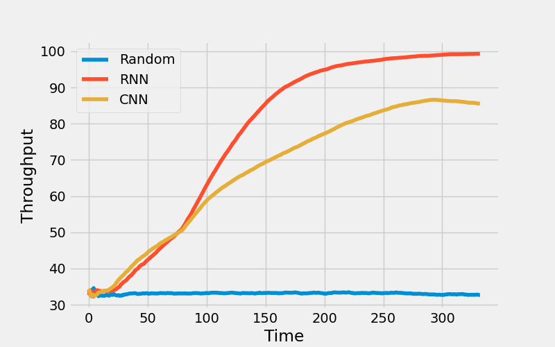
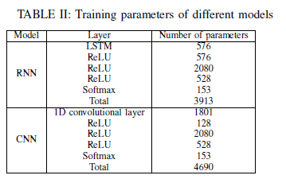
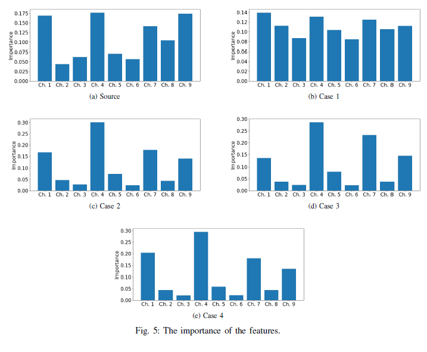
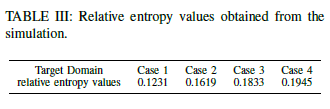
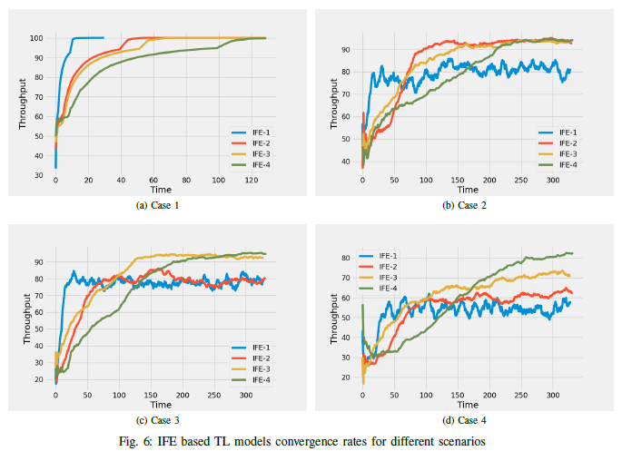

Integrated Feature Extractor Transfer Learning for Wireless Network Security
May 30, 2023
This is an interactive article for my paper “Intelligent Anti-jamming based on Deep Reinforcement Learning and Transfer Learning”.
First, let us see how a jammer disrupts user signals in a wireless network.

In this example, the jammer disrupts the Access Points (APs) in each regional network. This way, users sending signals to the access point in each region will collide with the jammer signal. Usually, the jammer has higher signal power, hence the signal at the receiver (AP) becomes disrupted. This way, the jammer can lower the efficiency and throughput of the communication system.
To confront such a problem, we can equip each access point in each region with a machine learning (reinforcement learning) based agent. The agent can predict the jammer actions and this way, avoid collisions with its signals. So first, we train a deep reinforcement learning model (DRL) that can predict the jammer behaviour and maximize the throughput of the wireless network in a specific region called "source domain". We consider a certain scenario for the source domain and call it "Source". The scenario we used is a sweep jammer. For a deep reinforcement learning mechanizm and how it works, kindly refer to my other project, deep reinforcement learning for atari games. The deep neural network (DNN) architecture used for the DRL model is as follows:  I use "double Q-iteration" DRL algorithm since it avoids "sub-game perfection". The hyperparameters used to tune the DNN for the double Q-iteration algorithm are as follows: 
As shown, I propose using recurrent neural networks (RNNs) instead of convolutional neural networks (CNNs). Because the wireless network information are all based on time. As a result, the dataset is time series. RNNs are known to perform great when the input space (state space in DRL jargon) is time series. And for the RNN architecture I recommend using one long short-term memory (LSTM) layer as the first hidden layer. I made a comparison between RNN and CNN networks and the results are impressive.  As shown, the RNN is working 15% better than CNN even though the number of parameters used for the RNN network is less than CNN. 
Now as you can see, both models take a considerable amount of time to be trained. This is not application in applications as fast as wireless network communication systems. So the proposed method in my paper and similar works is to use a ML method named Transfer Learning (TL). As the name suggests, in transfer learning, we transfer the learned knowledge which usually is in form of a DNN and its weights, to a new environment facing the almost the same problem.
The type of TL I used is named Integrated Feature Extractor (IFE) such that insead of feeding the input to the DNN, feed the extracted features. Each layer of a DNN extracts features but the first layers give general features while the last layers produce the detailed features. In the IFE-TL, the feature extractor part of the DNN is learned in the source domain, and transfered to the target domain. As a result, the layers extracting the features are frozen in the target domain.
To be able to determine how many layers are needed to be frozen in the target domain, we need to estimate how different the two source and target regional wireless networks are from each other. To do so, I used an eXplainable Artificial Intelligence (XAI) method named Feature Relevance Explanation (FRE). It means we can understand the behaviour of the black-box of DNN by extracting the most important features of it using a more explainable model such as Random Forest models.
To have a good estimation of the two different source and target domains and to avoid any information leakage from the jammer to the users, I first extract the features in the source domain. To do so, we first test the trained DNN to generate data for the random forest model. After transferring the DNN to the target domain, to generate data for the random forest model in the target domain, we test the same DNN tested in the Source. The reason is to measure the differences of the RL agent decisions while following the same policy learned in Source. After having the two extracted imortance of the features, we can calculate the relative entropy (Kullback–Leibler divergence) of the two importance of the features. If the extracted features are not making a probability distribution, we can normalize the values.
I have consider 4 target domain scenarios and design the jammer in a way to be in different differences from the Source. We can see the importance of the differences in these different scenarios as well as the source domain in the figure below:  The following shows the calculated relative entropy values based on the extracted importance of the features. 
Based on the calculated relative entropy values, we can estimate how many layers are needed to be learnable in the transferred DNN in target regions. To see how the relative entropy values match the optimum number of learnable layers in each target domain, I try freezing different number of layers in each scenario and see how different IFE models work. The following shows the results for all the target scenarios: 
Conclusion
To be able to speed up the training process of machine learning models, especially in RL algorithms, we can take advantage of TL in problems that source and target domains have considerable similar features. In an jamming problem in wireless networks, I showed how we can implement RL models and decrease their complexity by IFE-TL in this article.